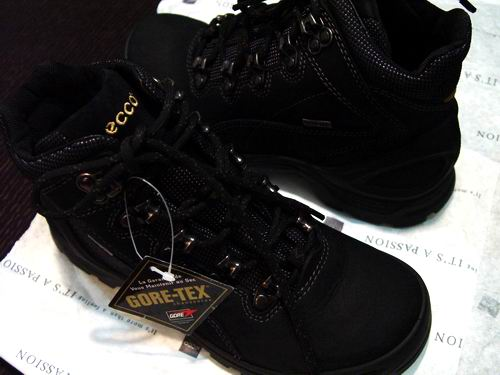
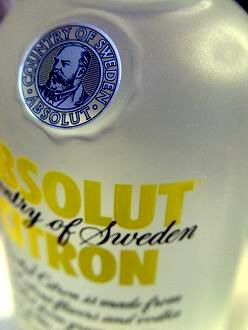
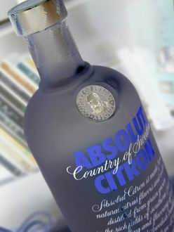
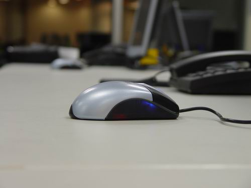
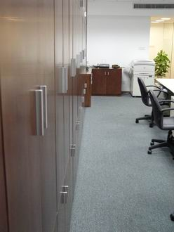
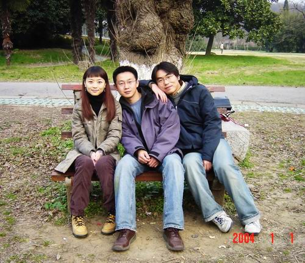
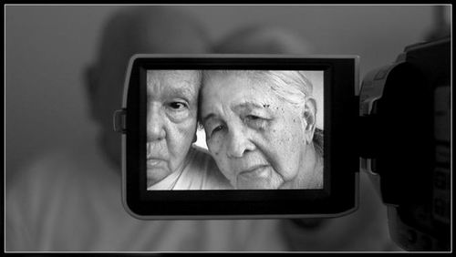

Archives : 2004-12
又下雪了 @ Dec 31, 2004
南京下雪了，虽不大但可以看见白色堆积，也很让人开心。今天获知元旦放到3号，哇~~
圣诞节收到Julie从Dallas邮寄给我的贺卡，线条简单，温馨的感觉从心的最深处涌上来，仔细看了看原来是手工制作的，如果我的判断正确的话。周末收到一瓶红葡萄酒，这段时间应酬饭局，大家总是叫嚷着拿92年的葡萄酒，到底有多少92年的葡萄酒喝呢？收到写书的作者寄给我的两本书，有点儿小兴奋，之前在南京找了很多家书店都买不到他的书。这些便是我在圣诞节收到的最心爱的礼物了！
下午看见一个眼神，突然联想起几年前的一些表情，在利益面前大家的嘴脸都是差不多的。
是否浪漫如我 @ Dec 30, 2004
 从工作了五年的办公室里整理出两箱私人物品带回家，留下一大堆旧文件旧样本旧样品放在文件柜里等打扫卫生的阿姨来收，接下来还要整理那些抽屉，杂乱而琐碎的过去。五年堆积出来的不过是一堆垃圾，过去往往令我轻视，但仍然不断堆积堆积，直到现在......随意翻阅旧文件，看到过去或勤奋或拖沓的工作情绪。他辞职后的若干年我孤独极了，任何人一丝一毫的嘘寒问暖都能令我感激不尽，当时的状况好似没有组织、没有丈夫、没有钱，毫无安全感，有时想彻底放弃了，也不知道自己在坚持什么，就那么从一个阶段里走到现在。当你看过世上最丑陋的嘴脸，你还需要回避什么？
从工作了五年的办公室里整理出两箱私人物品带回家，留下一大堆旧文件旧样本旧样品放在文件柜里等打扫卫生的阿姨来收，接下来还要整理那些抽屉，杂乱而琐碎的过去。五年堆积出来的不过是一堆垃圾，过去往往令我轻视，但仍然不断堆积堆积，直到现在......随意翻阅旧文件，看到过去或勤奋或拖沓的工作情绪。他辞职后的若干年我孤独极了，任何人一丝一毫的嘘寒问暖都能令我感激不尽，当时的状况好似没有组织、没有丈夫、没有钱，毫无安全感，有时想彻底放弃了，也不知道自己在坚持什么，就那么从一个阶段里走到现在。当你看过世上最丑陋的嘴脸，你还需要回避什么？
晚上在红泥为一个就要回到上海工作的朋友送行。说起来人生好似一个圆，我们都是围绕着一个圆在行走。工作、去英国留学、然后又回到留学前的公司工作。一切好象没有变化过，但大家相信他过去求学的经历会有一个好的回报。我想起其他经历相同的人...想到jiajia、hank，那些陆续结识的朋友，祝福你们将人生走得更圆满！
没来由的象许多人描述的那样在年底忙碌起来，有效率的忙碌总是好事情。公司发了一箱色拉油两袋卫生纸以及一些食品，和发几百元人民币相比这些价值低廉的福利品体现了组织对群众的关怀（瞧！这就是有组织的好处。），大家象小蚂蚁般热火朝天地往家搬运这些东西，说明这种关怀很有效果！晚饭后我把公司的这种关怀送到我父母家中，似乎更有效果了！刚进自己家门便接到母亲热情洋溢的电话，大意是周末来给我烧好吃的，问我有什么需求没有。是啊，这个周末我终于可以寂寞下来，躲在空调房间里想想山想想云，想想别人喝着西北风是否浪漫如我？
夜已深 @ Dec 24, 2004
在金鹰为自己买了双ecco的鞋，为西藏以及那些艰苦条件下的旅行做准备，为此我一直静静地等待着。
我们部门明天下午以5万人民币拍卖一辆帕萨特，开了17万公里，50人里有6人打算去竞拍。因为懒惰一直没去学驾驶，这样的话明年二月左右我才可以去参加驾照考试，最近经常翻阅汽车杂志，想买辆性价比不错的车。
回家的路上和他讨论到“欲望”这个话题，“欲望”是一切竞争的动力，攀比炫耀也是产生“欲望”的原因之一。他认为：“若一个人爱攀比炫耀，那么他将受到这种心境的控制，会做出错误的判断和决定。”这也是他用了几年时间才明白的问题，他要我无论在买车还是在选择上都要具备一颗平常心，因为那和money无关。
中午跌了跟头之后，傍晚下班经理便找我谈话了，大致有关调整工作岗位的问题。他出乎意料的友好和客气，此前一点消息都没有，即无欣喜也无失望（靠，我心态还真好），虽然理想和现实总是存在差距，但无疑降低了我在这个环境下的不安全感。过去几年的经历已经无法代给我更多有关理想的想象，我在工作上挣得的每一分每一厘都会成为工作时间以外的快乐，这些变动必然会产生一些新问题，它们会排着队活跃在我的周围，那时又将是怎样的心情？

无法独立思考 @ Dec 23, 2004

冬至开始南京一直在下雨，温度也下降了。天气预报说明天中雪转大雪，真让人期盼！
这段时间我忽然变成一个自然人存在着，自然地呼吸新鲜空气，自然地感受下雨天，很享受的感觉还包括不去上班，躺在被窝里聆听窗外的雨声，当然这种自由同时也是悲哀的，说明我不被别人所需要。选择一种生活，并尽力去扮演生活中的主人公。然而有段时间我对生活没有任何设计，豪无思索大大咧咧，没有为生存发愁过，没有太高的物质欲望。但仍然心有戚戚焉，毫无逻辑的不安全感笼罩着我，这种状况无法使我独立思考。事实上，又有几个人可以独立于这世俗之外思考？谁能看清未来？再周全的考虑也不能包括未来真实的全部。也就是说最终促使人下决心的仍然是激情、冲动和义无返顾的傻劲儿。
这段时间从我嘴里说出来的都是些废话，不是废话的那部分都放在心里和文字里了。这令人愉快，我终于可以将废话从体内筛选出来，象那些正常人一样去表达。这世间不是十分的好，但只要好七分就能令我满足且陶醉；这世间没有十分的快乐，但两分的快乐也值得去珍惜。我不是那种爱动脑筋的女人，所以这段时间我倾向和简单交往。
谁逢喜事心情好 @ Dec 23, 2004
当一个人有喜事的时候，对周围的人总是很友好很友好，心胸豁然开阔，把钱包掏出来给别人都没意见，很那个博那个爱起来。人真是有意思的动物！

Don’t let the sun go down on us @ Dec 22, 2004
昨晚上做梦了，梦见一大团棉花糖......

Don’t let the sun go down on us
by Jerry Ting
Nikon D-100
无序 @ Dec 21, 2004
一个人坐在肯德基餐厅里解决午餐，那些嘈杂声仿佛在另一个时空里飘荡，我静静地躺在自己的思绪里荡漾，窗外的街景并不好看，但因为是流动的，所以总令人期待，好似人生。

周日凌晨于南京1912
Shot by Christina
Sony F717
周六，晨，雾 @ Dec 19, 2004
没有闹钟的铃声，习惯性的在早晨7：30醒来，打开台灯继续看昨晚那本书，一边听他用英语说着梦话，就这么磨蹭到快9点起床。往常睡醒后和姐姐妹妹们一样都在为穿什么衣服烦恼，有时穿得赏心悦目有时又会是惨不忍睹，或满意或不满意的走出家门。只有周末的早晨是轻松的，可以不刷牙不洗脸的就坐到书桌前敲打电脑键盘了。书房里还弥漫着昨晚他抽的烟味儿，点上小蜡烛改善一下空气。说到蜡烛我想起女友昨日送我的烛台，她说你喜欢点蜡烛，我逛街看着好看就买了三个，一个给你，一个给老牛，一个自己留着用。那是一个吹萧的女天使穿着粉红色衣裙，玻璃材质越发显得烛台晶莹剔透。还不能确认究竟是放在家里还是放在办公桌上装饰用好？于是周末，它被刻意地忘在了公司。
昨晚和他跑了几家酒吧，人爆满。难怪南京的小酒吧越开越多，去年国贸楼上100平米不到的天堂隔壁酒吧，在阳光大厦那边新开了分店。去了两次，也许是因为周末的原因客人非常多，第一次和他还有一个法国帅哥去的，当我们介绍这个酒吧是以一夜情著名时，法国帅哥歪着嘴笑着问道：“one night love or one night sex?”他说他们那里十五、六岁的青少年抽烟吸毒的人比过去要多很多。中国人酷爱仿造，这种嗜好不仅体现在商品上还体现在生活方式里。下面我们又将进入怎样一个模仿时代？在酒吧见过形形色色的女孩，其中一些人只要不开口说话，就是非常美丽的动物！然而，这些美丽的动物不是被欣赏着，她们的周围总是闪烁着猎人的眼睛，随时随地都有可能被射杀，充满着刺激和诱惑。酒吧是一本人类心理学的书，那些眼神表情和行为......从小我就喜欢观察人，现在这种喜欢已经延伸到人物摄影上。前两周去摄影器材店看过实物的Canon Eos 20D，太大了。用过F717之后，我怎么还可以对相机没有要求？我现在特需要一个旅游携带方便、体积小，性能好的单反数码相机。F717携带还是不够方便，有时想悄无动静地拍一下陌生人，那个大家伙一掏出来就把对方给吓跑了。
我现在无所依赖无所欲念，就那么点小小的爱好，这是否喻示着一种衰老？当我收到礼物的时候才发现一年过去了，人们又要投身到各种沸腾的场所欢度西方人的节日，这和结婚男女盛行为无名指戴上戒指是同一种模仿。这之中有多少人信奉天主教和基督教？我和他没有互赠戒指，首先我们不是宗教徒，其次我们不相信那些繁文缛节，于是我们给自己各买了一块手表，这既实用又有纪念意义！常有人询问我们的生活计划，其实我和他什么计划都没有，和他生活在一起之后受他影响我渐渐也开始随意了，人们往往给他们注重的事物套上各种各样的形式，越想望得到越是得不到，这是一个不变的规律！“象草木一样均匀地呼吸，不去思索（刻意的），平静的生活。”这是女作家陈染在一篇文章里的话。
*他送我三本不同主题的相册，很有意思的设计。是圣诞礼物吗？

*书房里的晨烛

*暖色调的光影

*瑞典柠檬味的伏特加酒


傻根，原来那个啥如此重要... @ Dec 17, 2004
 在电影院看完冯小刚贺岁片《天下无贼》。冯小刚：“如果说《手机》是一杆子插到生活里的话，《天下无贼》可以说是打一巴掌揉三揉，对人性和生活都充满了善意，甚至有些乌托邦式的理想主义。”好人或是坏人并不是靠长相来决定的，这是刘德华的“贼人观”，乍一听颇有哲理。“其实在生活里很多偷盗之人不是因为钱财，而是因为灵魂，《天下无贼》就是这样一个深入到贼人灵魂的故事。”
在电影院看完冯小刚贺岁片《天下无贼》。冯小刚：“如果说《手机》是一杆子插到生活里的话，《天下无贼》可以说是打一巴掌揉三揉，对人性和生活都充满了善意，甚至有些乌托邦式的理想主义。”好人或是坏人并不是靠长相来决定的，这是刘德华的“贼人观”，乍一听颇有哲理。“其实在生活里很多偷盗之人不是因为钱财，而是因为灵魂，《天下无贼》就是这样一个深入到贼人灵魂的故事。”
电影从开始女贼王丽对神祖的跪拜，而男贼王薄的嗤之以鼻就预示了影片的悲剧结尾。演傻根的王宝强是冯小刚新挖掘的新演员，傻根语言纯朴、倔强、可爱而真实，没有这个角色的存在相信盗贼们也不会演得那么出彩。整部影片里我最不喜欢的演员是李冰冰，有段在火车的酒吧里李冰冰穿着吊带裙的形象实在令人大跌眼镜，衣服根本撑不起来，不够饱满骨感太重。与《手机》里的范冰冰相比较而言，范冰冰的眼睛聚集着智慧和情感，眨眼的瞬间从睫毛上洒落出漫天星光。范伟和冯远征那出打劫的戏狂逗：“抢.....抢...劫...今天......我就要......劫......劫个色......IQ…...是什么......？ 拿......拿出来......”冯远征严肃的形象来演这幕喜剧真是无人能比，他翘着兰花指说的那句：“不许笑，这是打劫......”最最印象深刻。
我和许多人一样面对世俗险恶也是傻根式的思维和心智，但那只是开始的时候，如我女友所说。我们不仅学习如何防贼还学会如何辗转于现实社会的染缸中。在女人眼中率真朴实的傻根式男人还是很有吸引力的，女友则认为傻根不会调情，所以傻根除了要学习如何防人还要学会如何调情？傻根正是用他那种质朴感动了王丽，而王薄还活着话，他一定还会是个贼。
心不设防 @ Dec 15, 2004

傍晚，天色如墨色般铺撒开来，不愿将时间耽搁在办公室里，匆匆离开公司。出大院时又遇见了那个精神病人，面颊消瘦得让人怀疑他会在某个日夜交替中悄无声息地死去。肮脏而精神亢奋，声音清晰但却不忍细听他的说辞，战栗着路过他的身旁。如今他只活在他自己的世界里了，瞧他意气风发想说就说想指点江山就指点江山的气魄，比起我们这些正常人要逍遥洒脱。
最近又在上演失恋故事，前日收到同学电话还有昨晚的短信无不诉说着对现实的无奈。离婚和失恋相比到底哪一个更人道些？作为朋友我无能为力，包括语言。我无法去做那些别人都看出来的做作，去做看似仁慈实则同情的安慰。中午朋友开着他的M6接我出去办事，车内25度的温暖颇让人惬意。一路三八地催他快点找个婆娘解决人生大事，人家得意地回答道：“我习惯了这种生活方式，舒服！”恍悟，现在的单身已不是旧观念里的模式，没有女人照顾的他每日更换保姆熨好的衬衫，握着方向盘的手背比偶家的他还要滋润，一天两遍沐浴......谁说非要两个人才幸福完整？
选择单身之前先审视一下自己长年累月的生活。是否能安排好日常生活？是否有兴趣爱好来补充空闲时间？是否有稳定的朋友圈？是否能以积极的态度持续面对悲凉的岁月？是否能解决好宽衣解带的事儿？......那么，以最自然的方式放置感情，不被干涉与打搅，忠实坦然于自己的心！婚姻不是在某个时间地点必须完成的任务，要想使别人快乐，首先得给自己一个好的交待。
这首陈慧琳的《 心不设防》送我爱的朋友们。
天暗了灯亮了
街正喧嚷
城市夜加倍辉煌
拥挤的陌生的
人在游荡
谁和谁交换孤单
夜太长梦太多
爱更迷乱
我原想远远的望
你的爱缓缓地
把我环绕
温热了我的眼光
如果你瓦解我的心防
瓦解我的抵抗
我是否不被刺伤
如果我卸下我的心防
卸下我的武装
爱是否美丽如常
要平凡
绝不要爱的复杂
我的心将不设防
墨色想象 @ Dec 14, 2004
华灯初上，不露声色地望着人来人往，近了又远远了又近...
人生诸多无奈，泪盈满眶无力而无助。



关系 @ Dec 13, 2004
Shot by Pavel Krukov
Canon 300D
这个世界上有各种类型的夫妻。有感情融洽的夫妻，有一年到头吵架的夫妻，有些夫妻无话不谈，也有无话可说的夫妻，有性生活和谐到完美的夫妻，也有无性婚姻...这个世界诱惑如此得多，细腻敏感的神经如此得多，上苍决定的事情如此得多！有时某种状况就象魔法一样，被施了魔法时可能因为过于热衷而看不清周遭的一切，我们越是坦然面对自己，越会做出一些别人认为有违伦常的事,不过清醒也在一瞬间。不管哪对夫妻或家庭，为了能维持一个家庭总需要一点努力吧，一种很平凡很常见的努力。
夫妻和家人之间的关系，其实是非常脆弱的。或许就是信赖，在这微弱的牵绊中维系着一切的不确定。维持平凡的状态，其实是最难的一件事。
日子过得真快...... @ Dec 13, 2004
前天晚上见到jiajia和Sherry，jiajia左手搂着Sherry右手搂着我，见面的喜悦现在回想起来带着淡淡的惆怅，一晃快一年没见了，时间改变了我们之间很多东西，有些......时间却永远无法改变，也许这样更好些......我们和大多数人一样感慨日子过得太快，为着这些我们应该把所有的心情都融化在每一次紧紧地拥抱中！



MSN对话 @ Dec 11, 2004
周末下班前，和朋友在MSN上对话如下：
Angie：同志，我们就要解放了。
Christina：你们公司要破产了？
Angie：猪，马上就是周末了！晚上我要去看齐豫演唱会。
Christina：祝你骑鱼快乐。
Michael：你居然连这个图标都有？
Christina：这个图标的台词就是“妈妈，我的手指破了”
Michael：我会很多英语骂人的话...有一句不错的英语叫:fuck the fucking fuckers，一句话三个fuck，我经常说Fuck这个词的。
Christina：比用这个动作还多吗？
Michael：我的这个动作不是很常用了......

短暂恋情的长诗 @ Dec 07, 2004

这世上最短的情诗
就是“爱”这一个字而这世上最长的情诗
就是将“爱”这个字写上百万次
就算在尚未写完时已经齿摇发白那绝不是诗的错
因为人生总是比诗要短一些
......记录其他 @ Dec 06, 2004
 Shot by Christina
Sony Dsc-P5
Shot by Christina
Sony Dsc-P5
去朋友讲的店里帮公司买些演出的化妆品，那些漂亮的韩国眼影和假睫毛真让人心动。最最年轻的时候坚持不化妆原则，开始臭美的年纪却仅是化化眼线和口红......现在想起来有些遗憾，那个年纪正是可以大胆尝试各种色彩和服饰别人也不会觉得过分的阶段，如今已经一去不复返了？！
上午央视台重播上周的《对话》，主持人提出一个问题：我的一个朋友32岁了，目前工作的不快乐，缺乏激情和热情，既无动力也无发展前景，如果是你，你会选择以下哪些方法去解决？1、跳槽；2、创业；3、充电。大多数场内观众选择创业，外国嘉宾则认为如果有足够的钱、有自信心，可以选择自己喜欢的事物去充电，他认为创业的人群中只有1%成功了，相对风险较大。
无意间看到这样一则小文：“要深入了解一个人，有的时候并不需要和他相处很长时间才做得到。在一些小细节上，自然界的造物主已经向我们泄露了天机。低头观察一下你的左手吧（或者看你男朋友的也行），你能发现一些有趣的秘密！我们的左手无名指代表了我们对性的态度。如果你的无名指比你的食指长，说明你对性的需求比较高，如果反之，则说明你对这个无所谓。为什么呢？因为左手无名指的生长本来就是受性激素所影响的。”
哇！我的无名指......
这两天的南京阳光明媚，我的生活节奏如此的慢，太阳的光热却无从感觉感受，只能在周末的落地窗前小憩片刻。阳光下的满足，这日子......
***********************************************************************
中午出去时又遇见马路上挖坑的施工队，这是南京一大特点，这边心情极好的行驶在刚刚修好的马路上，没几天这边挖呀那边挖的，给马路装上拉链似乎也来不及，更可气的是补好的马路上很明显的大补丁小补丁。早前看到《南京晨报》上有篇关于南京城市形象的问卷调查报道：9成市民热望提升南京形象。
记者访问—在读研究生：“南京人给人的感觉是没有斗志，太容易满足，缺乏上进心，“那种慵懒的感觉看起来活得很舒适，实际上封杀了一个城市前进的步伐。作为六朝古都，南京已经丢掉了太多的东西，破坏了太多的东西，象明城墙、中山陵被砍伐的树木等等。”
中北集团员工陈先生：“用庸俗来形容南京以及南京人现在的状态，最明显的表现是“在公共场所经常可以看到开口骂人的市民，让人感觉有的市民素质很差。一个城市要发展，它的人文的东西一定要保留下来，在这个前提下，其他东西可以尽情发展。”
71岁退休的王先生：“南京现在搞的是‘四不象’，东学一点，西学一点，反而没有自己的东西了。而周边的苏州等城市，外地人一下车就能感觉到当地的特有味道。计划经济转型时期，一些建设的展开和较快的速度期望是必然的，我们可以对此表示理解，但是在这个过程中却破坏了城市原有的一些东西，比如说南京的老城保护，这一点绝比不上西安。”老人认为南京的古城味不应该丢掉。
今天多云 @ Dec 02, 2004
下班等他来接我已是晚上7点多钟，初冬的南京夜晚并无透骨的凉，只是那风飕飕地便钻进衣服里了。我时而快乐时而烦躁着，与对他的期盼一样。很明显我们之间的交流多于以往，这使得我们的心可以靠的更近。在这样的季节里，可以彼此取暖宽慰心神。
前日在南师大附近的音像店里买了尹建的韩语歌曲CD，终日携带这张CD往返于家、公司、车之间，只要有条件播放音乐便不嫌麻烦地拿出来听听。事实上我不过是希望保持听这张CD时的心情，可以保持一段时间也好。现在的我越来越语言贫乏，食欲却大大的好起来，因为这个居然有人在MSN上跟我挤眉弄眼了一番。
整个大厦的空调还没启动，自然无法继续午睡，有些无聊的中午便踱步到附近的小超市买些热巧克力冲饮和饼干，路过路边摊时又看见那只憨厚可爱的可卡犬“艾莉”，吹着口哨上前唤她，她的眼神似乎不大灵光了，只是顺着声音朝我抬起脑袋晃动着剪得不太标准的短尾巴，缓慢地迎着我走过来坐下。我轻轻抚摩着她的脑袋，轻呼着“艾莉”，她那时的神情让我感到快乐和心疼。早晨上班开车路过时常看见艾莉在卖早点的摊子前聚精会神地望着热气腾腾的美味。书上说可卡是极富表情的犬种，在妞妞和艾莉的身上我得到了强烈的认同感，她们的眼睛会说话，和我们中间一部分人的“死鱼眼睛”比起来要充满感情的多。
艾莉现在的主人是开快餐店的老板，艾莉刚刚生完BABE时被原先的主人嫌弃，于是经常流浪在快餐店附近。老板喂过几次食物给艾莉吃，渐渐地艾莉就呆在快餐店里了。老板说艾莉刚来他们这里的时候非常瘦，现在的艾莉胖得象头小猪，走路一晃一晃的。但是艾莉的卫生状况不太好，耳朵上的毛已经打结，眼睛混沌不堪，我一有机会就要叮嘱快餐店的伙计帮艾莉点眼药水。
这世上没有不好的狗，只有不懂狗的主人。人类把自己愚昧无知故而无能解决的问题都推卸到狗狗身上，并以此为理由遗弃他们。狗狗无私的爱也得不到人类从始至终地关怀和照顾，一个微弱的生命却带给了我们许多的欢声笑语。令人无奈而苦涩地是我父母在2003年4月非典时期收养的流浪狗果果，今年春夏交替时怀孕，即将分娩前被人偷走，这无非和钱有关，果果肚子里的BABE是被偷盗的主要原因。非典时周围邻居没有一家人敢收养流着鼻涕的果果。流浪过的狗狗很懂事很惜福。有的朋友总是询问我为什么不让妞妞生育的问题，指责这是违背天性......其实我考虑的是妞妞的BABE是否能得到一生很好的照顾？这个世界如此悲凉和残酷，还有什么可以让我们相信人性？不要再继续制造悲情故事了......
给咖啡加点奶 @ Dec 02, 2004

Sexo caliente, sexo frio
by joan mateu i font
Canon 1 Ds
文明世界有文明世界的游戏规则。玩笑也好幽默也好不管是高尚是下流都是事先在家里炮制好的，如同端上筵席的一道道菜。玩笑和幽默并不高明不是说的人缺乏知识而是他没有随机应变的智慧，正如不是菜做的不好而是上菜时把顺序搞错了。你说你欣赏我的举动但并不欣赏我讲话的内容。相反，你非常讨厌。我通篇讲话说穿了不过是一则征求做爱的广告。
你说“讨厌”这个词时好象很愤慨，但我从你眼睛中看出你实际上在撒娇，并不“讨厌”。你正在力图使自己变成一个女人，象西方的狗和猫跑进森林，要咬人要捉老鼠一样。作为一个女人你实在懂得太多因而活得更累。知识本来就是人的负担。
我想帮你卸下负担于是我顺从你说。我说我也知道我刚刚是哗众取宠，但真正的学问是说不出口的。最宝贵的东西是人内心的体验只让它深深地埋藏于内心，千万别说出口。世界上的真理都无法证明，凡是能说得一清二楚的道理都是掺着假。与其一本正经地说半真半假的话不如把一点内心体验嵌在玩笑里。
把世界看透了以后你就分不清是悲观好还是乐观好，我就是我！你却说在乐观主义者和悲观主义者之间你还是喜欢后者。你还说只有悲观主义者才有宽容的胸怀譬如菩萨，菩萨就把人生看作一个大苦痛。我说菩萨悲观和乐观得彻底就表现在它的沉默，它看见了听见了体验到了却什么都不说。
你深感到自己必须回到野蛮状态中去，使自己恢复成一个真正的女人。你说男人聚在一起总喜欢讨厌地谈女人，然而男人们其实并不理解女人，真正理解女人的是女人自己。我辩解说不尽然，女人并不理解女人正如男人并不理解男人，理解女人的恰恰是男人中真正懂事的那一小部分，与理解男人的恰恰是女人中真正懂事的那一少部分相同。
我现在都将我们说过的话忘却了是因为我们当时的语言游戏并不重要。语言只是手杖，借着它我们一同携手走进一个黑洞。
那时你的眼睛象加了过多牛奶的咖啡那样温柔，纯粹是一对女人的眼睛。
我当然喜欢喝更好的咖啡。